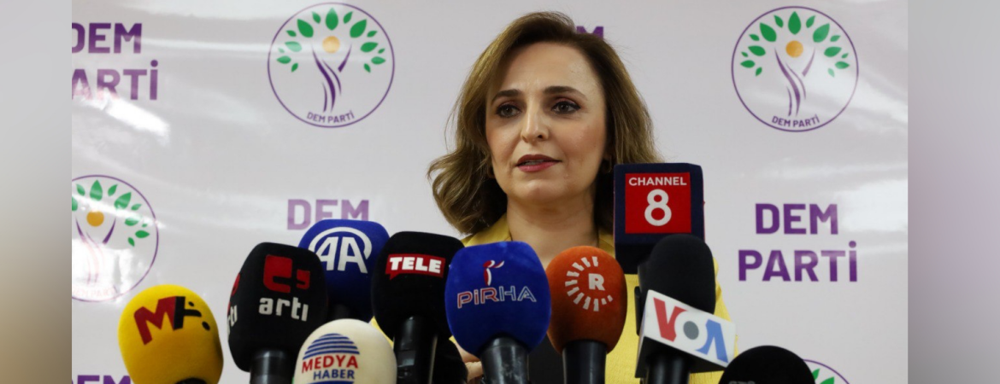

Parti Sözcümüz Ayşegül Doğan, Genel Merkezimizde düzenlediği basın toplantısında partimizin yeni adını ve alınan kararları açıkladı. Doğan, şunları söyledi:
Yargıtay parti ismimizi kabul etmemişti
Merhaba, hoş geldiniz, dembaş, demxweş, demgeş diyerek başlayayım. Rojbaş. Bugün burada bulunmamızın nedeni partimizle ilgili iki önemli konu hakkında bilgilendirme yapmak. Arkada ve kürsüde de görüyorsunuz. Bunun hikayesini tekrar hatırlatayım. Biliyorsunuz 15 Ekim’de oldukça coşkulu ve görkemli bir kongre gerçekleştirdik. Kongrede zorunlu nedenlerle ismimizi değiştirmiştik. İsmimizin uzun ve açık hali Halkların Eşitlik ve Demokrasi Partisi kısa ismi ise HEDEP olarak belirlenmişti. Kongrede yapılan değişikliklerin başvuru süreci için bütün hazırlıklarımızı tamamladıktan sonra Yargıtay Cumhuriyet Başsavcılığı, partimizin kısa ismi olan HEDEP’e itiraz etti ve tüzüğümüzün bazı maddelerinde değişiklik yapılması gerektiğini bize 18 Kasım tarihinde tebliğ etti. Aslında gerekçeyi hatırlatmaya gerek yok ama tarihe not düşmek için tekrar etmekte fayda var. HEDEP ismi HADEP’i andırıyormuş ve hatta karıştırılabilirmiş. “Aynı olmamakla birlikte iltibasa mahal verecek her iki siyasi partinin birbiriyle karıştırılmasına elverişli olduğu kanaatine varıldığı” tarafımıza bildirildi Yargıtay Siyasi Partiler Bürosu tarafından.
Çelmelere ve kumpaslara karşı seçeneksiz değiliz
Oysa HADEP kapatılmıştı. Böyle bir parti yok. HADEP kapatıldıktan sonra AİHM tarafından bu karar nedeniyle Türkiye mahkum edilmişti. Aslında nedeni apaçık ortada. Yine bir seçim öncesi bizi yeni bir yargısal çelme ile karşı karşıya bırakmak için yapıldığını, yeni bir hukuksuzluk hamlesi olduğunu sizler de takdir edersiniz. Fakat biz çelmelere ve kumpaslara karşı seçeneksiz değiliz. Bu, 30 yıllık demokratik siyaset mücadele tarihinde ortaya koyduğumuz performansla da tecrübeyle de deneyimle de ödediğimiz ağır bedellerle de sabit. 30 yılda onlarca yeni parti kurmak zorunda kaldık ama her defasında başardık. Neyi başardık? Halkların gönlünde yer edinmeyi başardık, mücadele tarihimizde iz bırakmayı başardık. Türkiye’nin demokrasi, özgürlük, adalet ve barış mücadelesine öncülük etmeyi başardık. Dolayısıyla seçeneksiz değiliz. Seçeneklerimiz tükenmedi ve tükenmeyecek. Ancak bunu bilmelerine rağmen böyle bir hukuksal, yargısal çelmeyle bizleri uğraştırmak istediler. Yine başaramayacaklar. Onlar bu yolları seçtikçe biz de yeni isimler ve anlamlarla mücadelemize hız kesmeden, üstelik çoğalarak devam edeceğiz.
Tüzüğümüzde yalnızca Yargıtay’ın itiraz ettiği değişiklikler yapıldı
Tüzüğümüzde yalnızca Yargıtay’ın talep ettiği, itiraz ettiği değişiklikler yapıldı. Bununla sınırlı tutuldu. Bunun dışında tüzüğümüzde herhangi bir değişiklik yapılmadı ve şu dakikalarda hem bu değişiklikle ilgili yaptığımız toplantının kararları hem de DEM Parti yani yeni ismimiz Yargıtay Bürosuna ulaşmıştır. Yeni bir itiraz gelmesini beklemiyoruz. Umalım ve dileyelim ki olmasın. Kısa adıyla DEM Parti, açık adıyla Halkların Eşitlik ve Demokrasi Partisi. Partimizin özü ve mayası halklardır. Kurulduğu günden beri bu böyle. Anlaşılmamış olmalı ki harflerle uğraşmaya devam ediyorlar. Oysa bizim mayamız halklardır, harfler değil. Yine partimizin özü ve mayası; özgürlük, eşitlik, demokrasi, adalet ve barış mücadelesidir. Bizi tanımlayan, tarih yazdıran ve tarihe yazdıran şey direniş azmimiz ve fikrimizdir. Bu duyguyla ben de Halkların Eşitlik ve Demokrasi Partisinin kısaltmasını sizlerle paylaşmaktan memnuniyet duymaktayım.
DEM Parti köklü bir direniş geleneğinden, zamanın içinden süzülen bir kısaltma
Köklü bir direniş geleneğinden, mücadele anlarından ve zamanın içinden süzülen yeni bir kısaltma isimle karşınızdayız: DEM Parti. DEM aynı zamanda nefes, söz, an ve zaman anlamlarıyla da bizi tarif ediyor. Yeni ismimiz, yeni bir zamanın ruhunu, yeni bir başlangıç anını ve yeni bir sözün hayata geçişini ifade ediyor. DEM devrandır, DEM bu demdir. DEM bu dem diyoruz ve bu devran önce kayyımlardan başlayarak inanın değişecek. DEM Parti ile varlığımızı her dem hissettirmeye devam edeceğiz. Zamanın zorluklarına, karşılaştığımız engellere, yargısal çelme ve kumpaslara rağmen duruşumuz, kararlılığımız ve birlikteliğimiz sayesinde mücadelemiz daha da güçlenecek.
Türkiye’nin kazanmasını isteyen herkesi DEM Parti’de yol almaya çağırıyoruz
Gözü, gönlü, kulağı ve kalbi bizimle atanlar, seçmen olmanın ağır bedellerine rağmen birlikte yol yürümekten vazgeçmeyenler yerel seçimler için şu ana kadar yaptığınız başvurularla partimize gösterdiğiniz ilgi ve teveccühten dolayı sizlere çok teşekkür ederiz. Sayılı günler kaldı kayyımları göndermemiz için. Tüm Türkiye’de aday adaylık başvurularını, bu ilgi ve teveccühü de gözeterek, 20 Aralık’a kadar uzattığımızı ve bunu da bir genelgeyle il ve ilçe örgütlerimize ilettiğimizi buradan duyurmak isterim. Halkların Eşitlik ve Demokrasi Partisi- DEM Parti olarak; Türkiye’nin kazanmasını isteyen herkesi nefes nefese verdiğimiz bu heyecanlı, kararlı, umutlu, onurlu ve cesur mücadelede beraber yol almaya davet ediyoruz. Haydi kadınlar, haydi gençler öncelikle sizler aday adaylığı başvurularınız yapın ve birlikte kazanıp kayyımlara halk iradesinin ne olduğunun gösterelim. İl-ilçe örgütlerimize gidelim ve aday adaylığı başvurularımızı 20 Aralık’a kadar yapalım.
Ew xera dikin em çê dikin: Kurtenavê me yê nû DEM Parti ye
Hûn bi xêr hatin cardin ez dibêjim dembaş demgeş demxweş. Me di daxuyaniya xwe ya berê de jî gotibû ku navê me yê dirêj naguhere. Partiya Gelan a Wekhevî û Demokrasiyê wekî navê dirêj dimîne. Lê dadgeha bilind a Tirkiyeyê îtirazî kurtenavê me kir ji bo navê HEDEP’ê. Ev nav nehat qebûlkirin. Ji bo ku em beriya hilbijertinên herêmî em bikevin tengasiyê xwestin astengiyekê bi vî rengî derxînin. Me jî nexwest em derfetê bidin wan û me vê carê îtiraza wan qebûl kir. Ji ber ku em di pêşiya hilbijartinê de ne me amadekariyên xwe kir û navekî nû ji xwe re dît. Ew dixwazin partiyên me bigirin, em ji nû ve ava dikin. Ew yên xerakirinê nê, em yên çêkirinê ne. Lewma me navekî nû diyar kir û me carek din gelên xwe be derfet nehişt û bi hinceta wan re me nexwest gelên Tirkiyeyê mijul bibin. Navê me yê nû DEM Partî ye. Em dibêjin Dem dema me ye, em dibêjin em ê bi Dem Partiyê vê demê û vê dewranê biguherînin. Di destpêkê de ev dem wê bibe dema birêkirina qeyûman. Dem îcar dema çareseriyê ye, dem îcar dema azadiyê ye, dem îcar dema aştiyê ye, dem îcar dema wekheviyê ye, dem dema destkeftinên gelan e, dem dema me ye. Ev sedsal wê bibe sedsala gelan û pêşengiya vê sedsalê jî wê gelê Kurd bike. Ji ber vê yekê jî em dibêjin em bi partiya xwe Demê em ê vê demê û vê dewranê biguherînin. Jixwe dîrokê jî ev yek nîşanî me kiriye. Ji xeynî vê jî agahiyeke din dixwazim bi we re parve bikim. Ji bo ku hûn bikarin bibin bernamzed dikarin dosyeyên xwe li hemû derên Tirkiyeyê heya 20’ê vê mehê serlêdanên xwe bigihînin destên me.
SORU: İşbirliği ve ittifak tartışmalarıyla birlikte diğer partilerle yana yana gelecek misiniz? İşbirliği yapacak mısınız? Batı illerinde tavrınız ne olacak, yol haritanızda belirlenmiş bir şey var mı?
Önümüzdeki günlere ilişkin yol haritamıza, sözünü ettiğiniz konulara ilişkin hem Eş Genel Başkanlarımız hem de ilgili kurullarımız gerekli zamanlarda gerekli açıklamaları yapıyorlar. Tavsiyem bunun dışındaki açıklamalara aldırmamanızdır. Çünkü hiçbir bağlayıcılığı yok. Bugünkü gündemimiz de bununla ilgili değil. Bugüne kadar yapılan ve yapılmış olan açıklamaların üzerine söyleyeceğim yeni bir söz yok. Çünkü yeni bir durum yok, yeni bir karar yok. Son MYK kararımızı burada son derece açık ve şeffaf bir şekilde paylaştım. Dediğiniz konulara ilişkin yakın zamanda Parti Meclisimiz toplanacak. PM’mizden çıkacak kararı ve Eş Genel Başkanlarımızın söyleyeceklerini; Parti Sözcülüğümüzün, Grup Başkanvekillerimizin, Kadın Meclisi Sözcümüzün, ilgili kurulların açıklamalarını dikkate almanızı öneririm. Durum bundan ibaret. Teşekkürler.
11 Aralık 2023